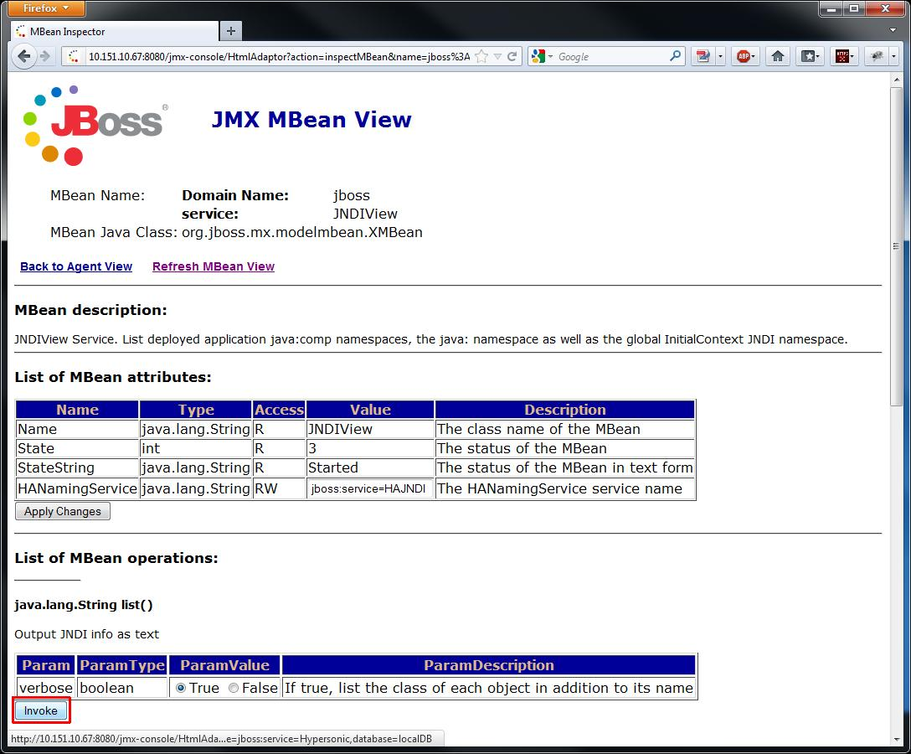

Checking deployment in JBoss JMX console
Let's check if things are OK in JBoss's JMX console.
- Open up a browser and navigate to the 8080 port of the IP address what you configured as a binding address for JBoss.
By default it's "http://localhost:8080".
Click on "JMX Console" link.
- Click on the "service=JNDIView" link.
- Invoke the list function by clicking on it's Invoke button.

- In the upcoming page you should see tracees of SOEMPI on the top of the page...
- ... and services at the "Global JNDI Namespace", at bottom of the page: